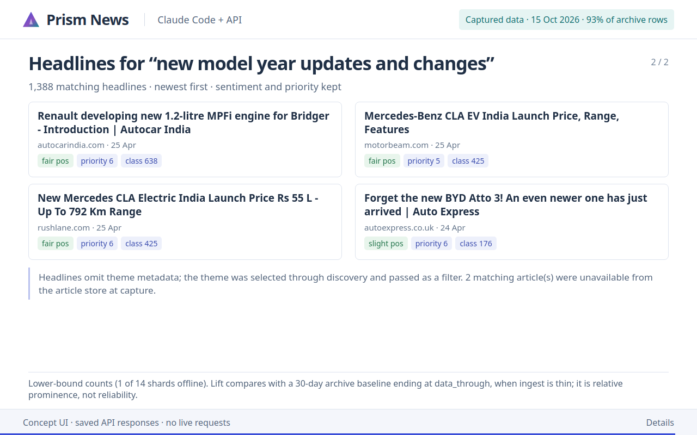

See what a connected
news assistant can build.
Write a brief in Claude Code or Codex. The Prism News API supplies filtered headlines, themes, tone, priority and full articles; your client turns them into a useful view.



Try this research brief
What you would see
Read the API guideInspect the request recipe
These are UI concepts, not recordings of the official Claude Code or Codex interfaces. Each GIF opens with a large typed prompt, slides the search box away and presents a full-screen chart followed by detailed results. The request recipes beneath the player are the API calls behind each view. The page makes no API calls and stores no credentials.
Green badges cite saved responses of the real API, captured on the date shown. These were captured while part of the archive was offline (93% of archive rows (1 of 14 shards offline)), so counts are lower bounds, and some articles could not be fetched; each demo says how many.